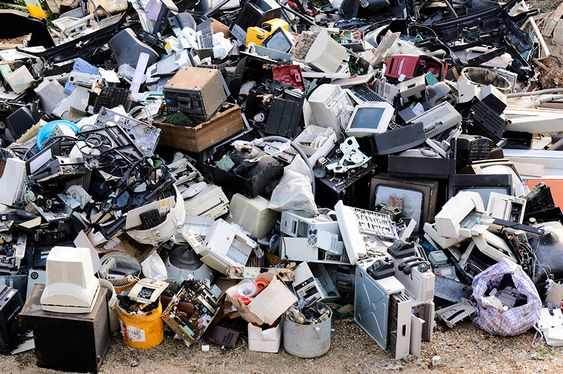

Somos mais do que uma empresa de reciclagem - somos agentes de mudança comprometidos com a preservação do nosso planeta. No MackRecicla, nossa missão é educar, capacitar e inspirar a comunidade a adotar práticas de descarte responsável, contribuindo assim para um São Paulo mais limpo e sustentável. Juntos, estamos construindo um futuro onde tecnologia e sustentabilidade caminham lado a lado. MackRecicla - porque cada pequena ação conta na construção de um mundo melhor para todos nós.
Os equipamentos elétricos e eletrônicos possuem diversos componentes tóxicos em suas estruturas. Se descartados de maneira incorreta, esses resíduos podem contaminar o solo e os lençóis freáticos, colocando em risco a saúde pública. O solo contaminado pode ser prejudicial à saúde de animais e plantas daquele ecossistema, e produtos cultivados naquela terra também serão contaminados; Quando atingem lagos, rios ou lençóis freáticos, os metais tóxicos de eletrônicos descartados incorretamente podem prejudicar a fauna, afetando inclusive a qualidade dos peixes da região, além de tornar a água e o alimento impróprios para consumo.
